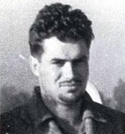

Jack Parsons
Rocket engineer and occultist, 1914 to 1952

A rocket engineer and largely self-taught chemist from Pasadena, who never finished a degree, and one of the principal founders of both the Jet Propulsion Laboratory and the Aerojet Engineering Corporation. In 1934 he, Edward Forman and Frank Malina formed the Caltech rocket group under Theodore von Kármán that became JPL in 1943. He invented the first rocket engine to use a castable composite propellant and helped advance both liquid- and solid-fuel rockets, and a crater on the far side of the Moon is named after him. 1,2
In 1939 he converted to Thelema, the religion founded by British occultist Aleister Crowley, and in the early 1940s he led the Pasadena lodge of Crowley's Ordo Templi Orientis from his home. He was dismissed from JPL and Aerojet in 1944, over his occult involvement and hazardous laboratory practices. In 1946 he and L. Ron Hubbard, later the founder of Scientology, performed the Babalon Working, a series of rituals meant to bring a goddess into human form; Hubbard then defrauded him of his savings. Parsons died at 37 in an explosion in his home laboratory in June 1952, ruled an accident, though some associates suspected suicide or murder. 1,2
Parsons has become part of UFO lore: occultist Kenneth Grant suggested the Babalon Working opened the way for the flying saucers of 1947, an idea Nick Redfern revived in Final Events (see the claims ledger). 1
Open in the interactive Watcher
Related
Sources
- Jack Parsons Wikipedia
- The rocket scientist who summoned demons: the true horror story of Jack Parsons Micah Hanks, Space.com, Oct. 30, 2026